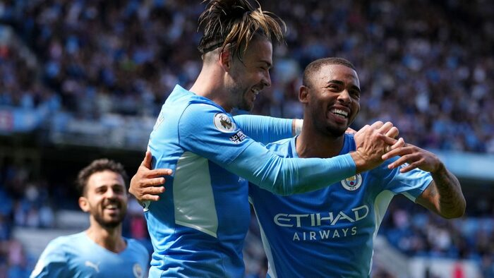

NuevoManchester City aplastó 5-0 al Arsenal
Antes del partido se esperaba una victoria del City, pero se creía que el Arsenal iba a dar más pelea. A partir del primer gol de Gundogan en el minuto 7 el partido fue completamente dominado por el City, y aún más tras la polémica expulsión de Xhaka en el minuto 35. Anotaron: Gundogan, Torres x2, Rodri y Jesús.
El equipo de Arteta sigue sin rumbo y sin mostrar mejoría. ¿Cuándo van a despertar?
Todos los resultados de la fecha 3 de la Premier League:
- Aston Villa 1-1 Brentford
- Brighton 0-2 Everton
- Newcastle 2-2 Southampton
- Norwich City 1-2 Leicester City
- West Ham 2-2 Crystal Palace
- Liverpool 1-1 Chelsea
- Burnley 1-1 Leeds
- Tottenham 1-0 Watford
- Wolves 0-1 Manchester United